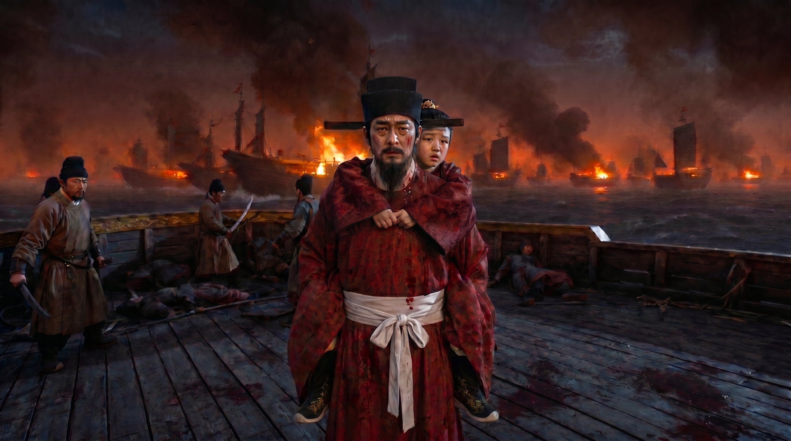
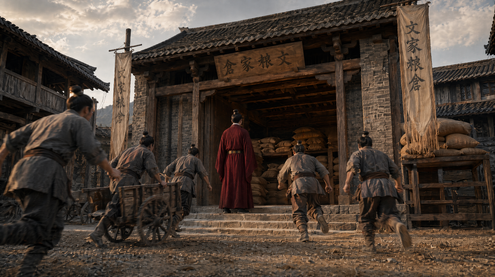
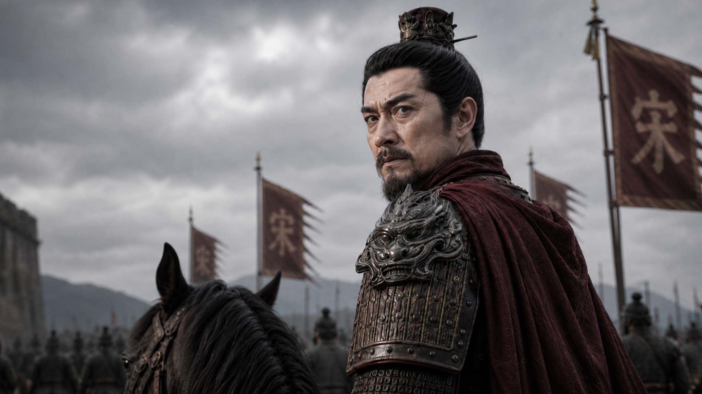
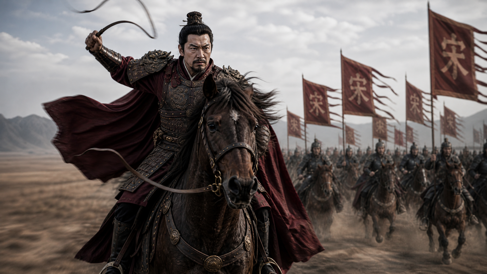
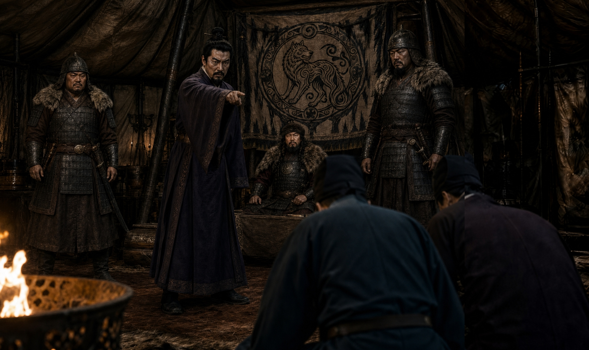
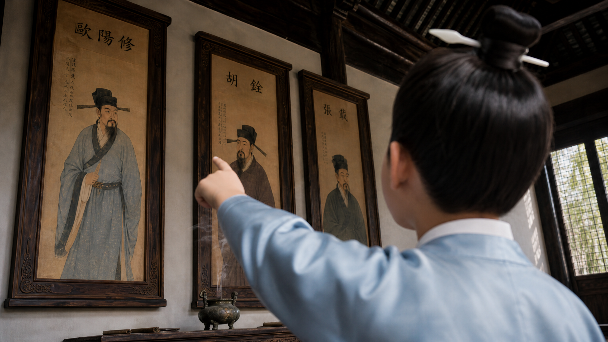

镜头 01Shot 01崖山帝舟殉国
画面描述
1279年二月，崖山海面残阳如血，战船焚烧、断桅漂流。陆秀夫背负幼主赵昺立于船舷，南宋最后的帝舟被硝烟与浪涛围困。
旁白 / 台词
陆秀夫（旁白）：宁以身殉国，不可受其辱。
情绪氛围
悲怆、肃穆、王朝末日的压迫感
建议时长约4秒
Song Dynasty Historical Teaser · 20 Shots
依据《文天祥》先导片综合稿重组为约一分钟网页分镜：以“崖山殉国”开篇，回溯赣州举义、雩都战场、元营不拜与土牢正气，最终抵达柴市从容赴义。
每张卡片按镜头编号、标题、画面、旁白/台词、情绪氛围与建议时长组织，图片自适应桌面与移动端，整体色调保持宋末历史题材的庄重史诗感。

镜头 011279年二月，崖山海面残阳如血，战船焚烧、断桅漂流。陆秀夫背负幼主赵昺立于船舷，南宋最后的帝舟被硝烟与浪涛围困。
陆秀夫（旁白）：宁以身殉国，不可受其辱。
悲怆、肃穆、王朝末日的压迫感
 镜头 02
镜头 02
炮火与海浪先于画面出现；黑暗中，文天祥的侧脸被船头火光照亮。他被元军押解，跪立却脊背挺直，凝望故国沉入夜色。
无对白，仅保留低频鼓声、海浪与远处战火。
冷峻、沉默、肉身受制而精神未屈
 镜头 03
镜头 03
灰蓝海面漂浮着破碎盔甲、木板与宋旗。镜头掠过尸横海面，定格在一面被海水浸透仍未沉没的残旗上。
文天祥（旁白）：人生自古谁无死，我文天祥与国共存亡，绝不独生。
孤绝、沉痛、誓言初燃
 镜头 04
镜头 04
战火余烬化作墨色云烟，金石质感的片名从黑暗中浮现；火星缓缓上升，如史册中未灭的丹心。
旁白：山河可碎，正气不灭。
庄严、凝练、传记史诗开场
 镜头 05
镜头 05
德祐元年，赣州街头尘土飞扬。卖朝报的小哥穿过惊惶人群，手中诏书被风吹得猎猎作响，百姓停步围听。
卖朝报小哥：朝廷下诏，举兵勤王，举兵勤王……
紧迫、民间视角、国难逼近
 镜头 06
镜头 06
州衙内光线低沉，文天祥双手捧诏，泪水落在纸面。他身后的案牍、官印与地图，映出文臣必须作出的抉择。
旁白：一纸哀痛诏，把读书人的一生推向兵戈。
悲愤、克制、责任觉醒

镜头 07沉重仓门打开，粮袋、银箱与家产被运出。家仆与义士列队接应，私家灯火转化为抗元军资。
旁白：他倾家勤王，把一家之所有，交给破碎的山河。
慷慨、决绝、由悲转为行动
 镜头 08
镜头 08
回忆闪回至宝祐四年，金殿明亮。二十一岁的文天祥立于丹陛之下，衣冠整肃，宋理宗与群臣的目光落在他身上。
宋理宗（旁白）：此天之祥，乃宋之瑞也。
明亮、荣耀、命运被历史命名
 镜头 09
镜头 09
赣州广场上朱砂旗帜翻涌，文天祥由文臣袍服披上战甲，面向义兵与百姓举臂疾呼。
文天祥：国家危难之际，人心涣散之秋，我辈更该挺身而出，振奋士气，抗争到最后一刻。
昂扬、激越、群情被点燃
 镜头 10
镜头 10
室内烛光温暖而沉重，文母取下首饰放入盘中。文天祥伏身行礼，母子之间没有挽留，只有家国托付。
文母（旁白）：无国，何来家。
深情、隐忍、家国伦理的升华

镜头 11城门开启，义军北上，旌旗与尘土遮住半边天空。文天祥在马上回望赣州，片刻后转身向前。
旁白：回望不是犹豫，是把故土刻进心里。
壮行、苍凉、离家赴国难
 镜头 12
镜头 12
闪回临安城外岔路，一边通往文山归隐，一边通向国事风暴。老仆牵马相随，文天祥望向兵燹方向。
老仆（旁白）：归隐文山，稳，可大人心有不甘啊。
迟疑之后的坚定、命运分岔

镜头 13青灰天空下，十万义兵沿赭黄大地延展成长龙。文天祥的旗帜在队伍前方，像乱世里被高举的一点赤色。
旁白：从一封诏书，到万众同行，丹心终于化作铁流北上。
辽阔、坚毅、史诗行军感
 镜头 14
镜头 14
夕阳血红，义兵冲入烟尘，刀戟相撞。文天祥立于战马上指挥，火光与尘土把胜利染成惨烈的颜色。
旁白：雩都一战，他让天下知道，南宋仍有人敢战。
激烈、悲壮、短暂胜利的燃点
 镜头 15
镜头 15
元营大帐内火盆炽烈，众人低头跪拜，唯有文天祥立而不屈。伯颜居高而坐，帐影将双方切成明暗两界。
旁白：礼可以逼迫，气节不能下跪。
压迫、对峙、冷硬尊严

镜头 16降臣上前劝说，文天祥怒目而视，衣袍虽乱，目光却如刀锋。帐中众人被他的斥责震住。
文天祥：汝等世受国恩，却叛国降敌，猪狗不如！有何面目立于天地之间。
激愤、刚烈、精神威慑
 镜头 17
镜头 17
国玺、降表、闭合的宫门与童年学宫交错闪回；现实的崩塌与少年时的志向相互叠化，像一道无法逃避的裂痕。
无对白，诏书翻动声与远钟声交织。
破碎、恍惚、信念经受重压
 镜头 18
镜头 18
元大都土牢，青冷月光与昏黄油灯对冲。文天祥须发蓬乱却端坐如山，在潮湿墙影前落笔写下正气。
旁白：天地有正气，杂然赋流形。
清冷、坚守、由外战转入心战

镜头 19闪回庐陵学宫，少年文天祥仰望先贤画像，清亮的眼神与囚室中的微笑叠化成同一个灵魂。
小文天祥：若不能置身其间，非大丈夫也！
清澈、坚定、初心回响
 镜头 20
镜头 20
至元十九年十二月初九，柴市刑场晨光渐白。文天祥整理衣冠，从容前行，最后的身影被白金色天光托起。
文天祥（旁白）：留取丹心照汗青。
肃穆、升华、死亡化为不朽